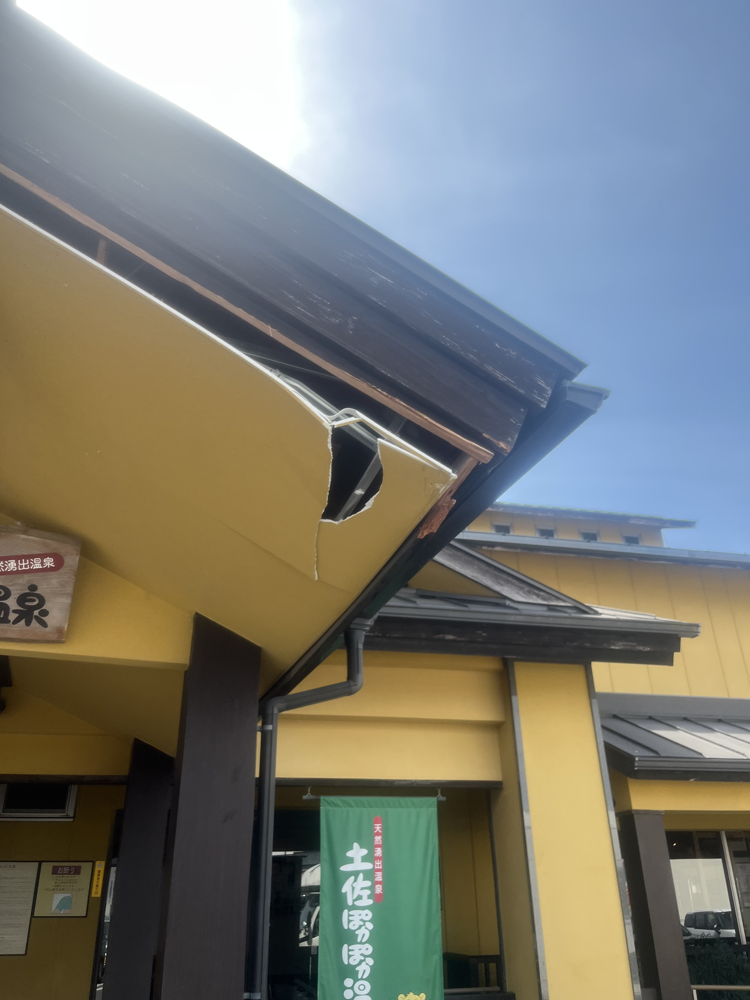
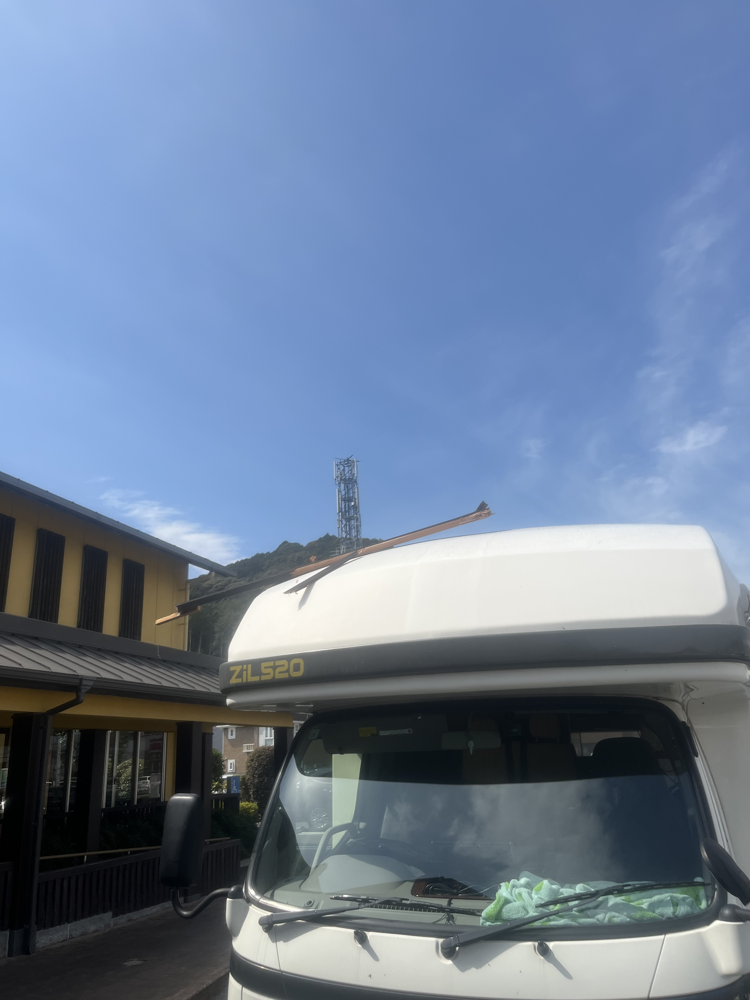
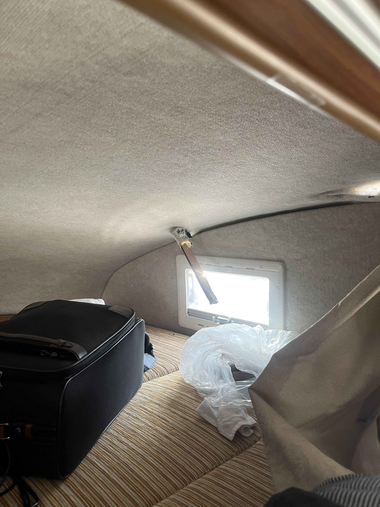

東京も全然寒いな
2026-3-1
スノボした。帰宅。親とゲレンデに行くのは14年ぶりだった。いざ行ってみると、親は来年も行きたいと乗り気になり、そのために一年運動すると言っていた。よいことだ。なるべくずっと健康にいてほしい。
スノボした。帰宅。親とゲレンデに行くのは14年ぶりだった。いざ行ってみると、親は来年も行きたいと乗り気になり、そのために一年運動すると言っていた。よいことだ。なるべくずっと健康にいてほしい。
今日から大学に行く予定だったが体が疲れすぎて無理だった。
この一年で自分が好きなものとそうでないもの、自分が面白いと思うものとそうでないものがとてもはっきりして、少しずつ言語化できるようになった。結果として、今まで自分が仲良く付き合ってきた人々の中に、自分が凡庸だと感じる要素が多分に含まれるということを強く自覚することになった。寂しいことだけれど、薄々わかっていたことでもあり、なおかつ今それらとの付き合い方を自分が見直そうとしていることもわかる。
アメリカに同行した友人たちはみな意志と卓越性を併せ持つ素晴らしい人々であるが、凡庸でもある。凡庸なる「意志ある卓越者」なのだ。「意志ある卓越」を持つマイノリティ集団の中のマジョリティなのだ。
北海道に同行した両親は、「普通の良い人」たちであって、つまり究極に凡庸だ。
それらが悪いことだと全く思わないしむしろ善だと思う。凡庸を忌避するという自覚を強く持つようになってしまった今の自分が彼らと旅行を楽しめるだろうかという心配が強くあったが、結果うまくやれた。凡庸を求めないが無理に避けもしない。このバランスを今の自分でもある程度取れるとわかったことは最近の旅行の一番の収穫だったかもしれない。
世間的に珍しい肩書きを集めて、自分が分類される集団は少しずつマイノリティになってきたが、なにか限界のようなものを感じている。「凡庸」、「閉じる」と「開く」、「求心」と「遠心」、ここ一年で学んだことは非常に多く、自分に大きな影響を与えているが、なにか消化不全が起きている気がする。何か見落としている気がする。このままだとメタルグレイモンじゃなくてスカルグレイモンになる気がする。
久々に大学きた。昔耳鼻科でもらった甘い薬みたいな匂いがする。なんかすごく静かに感じる。
追記:plenty再結成！うあーーー
久々に夜学バーで働いた。あんまり上手くできなかった気がする。自分は甘えている。
二連勤。昨日よりは上手くやれたが上手くできなかったところもあった。
名古屋から友人来る。彼は春から東京の某教育系企業で働くので物件を見に来ていた。夕方に合流し、千駄木のバ先で飯を食う。その後近くのメイドバーに行く。キャストの1人が卒業するのでお祝いした。ことあるごとに友人が「東京やな〜」と口にしたが、名古屋にもバーくらいあるぞ。ないのかな。
千駄木でバイト。名古屋出身の人がいらっしゃり、もんじゃ焼きに不慣れなので代わりに焼いた。少し前に名古屋に行ったことを話していると大曽根出身であることが判明。夜学バーの名刺渡した。バイト終わった後にマスターと奥さんがワイン開けて卒業祝いしてくれた。ありがたい。
旅行前後から明らかに鬱状態に入っていてまずい。今週は10時間寝てもベッドから出られなかったり、寝ても1時間で目が覚めたりした。花粉症の影響もあるのかも。あまりにも鼻水やくしゃみが酷くて、初めてアレグラ買った。つらい。何をやっても上手くいかない気がする。実際そうなら死ぬだけだが、賢いので実際にはそうではないことはわかっている。
一ヶ月以上ぶりに浅学バーでバイト。気分が落ち込んでるときに限って、ぼんなる人に対し明るく凡に対応してしまうのだが、これが後で辛い。場の空気があったまる中で、私の心は冷たくなっていたのでした…。
そんなことより今日は某18禁同人ゲームの15周年記念日である。18禁同人ゲームなので基本的にはエロエロなのだが、根底には「絶対わかりあえない相手を信じる」という僕が一番感動してしまう思想があるような気がして、超名作だと思っている。
翌日ゼミの発表が当たっていたので徹夜で準備した。
ゼミがめちゃくちゃ長引いた。寝不足の頭の中で5時間くらい「死ね」だけ唱え続け、大学と研究室とシロイヌナズナを呪い続けていたらいつの間にか終わった。ダッシュで夜学に向かう。途中浅学バーの前を通ると同じビルの2階に「SODコス×コス」ができていて爆笑。上野店ができるとは聞いていたが、まさかここにできるとは…。しかも調べてみると、プレオープンの日に浅学バーのシフトがある。なにかが起こりそうである。起こらないでいいです。何も。
大学サボったら心の力がちょっと回復した。夜は友達が卒業と大学院合格のお祝いをしてくれた。嬉しかった。
前日朝まで飲んだし昼過ぎまで動けず。夕方に散髪。見た目の社会不適合みが下がった。駅に全身真っ白のピタピタスーツのお兄さんがいて文化圏の違いを感じた。
浅学バーバイトあるかと思ったらなかった。というかシフトを知らされておらず、もしやと思って連絡したら今日入るのは別の人だった。来週の入るつもりだった日も僕じゃなかった。普通にダメだな。暇になったし家でアカデミー賞の授賞式みた。ここ数年好きな河合優実さんが司会で嬉しい。最優秀助演男優賞とった佐藤二郎さんが結構いいスピーチをしていた。
後輩のアカペラバンドのラストライブ行った。そのあとGEZANの武道館ライブ行った。楽しかったしすごかった。
昼まで寝てしまった。ちょっと酒飲む。夜は後輩のアカペラバンドのラストライブ行った。みんな卒業おめでとう〜。
昼前の新幹線で宇都宮へ。研究室のボスが関わっている事業の会議に同行した。なんと交通費も宿代も出る。こんなに嬉しいことはない。16時半に1日目の会議が終わり、一旦宿へチェックイン。素泊まり2800円（別にビジホとかとってよかったが、なんか貧乏性が発動してしまった）。駅前に戻って居酒屋で懇親会。僕と研究室同期の1人以外みんな社会人だったのでいろんな人に名刺もらうマシーンになった（さすがに夜学バーの名刺渡す勇気はなかった）。同卓にいた男性４人が全員イケメンすぎて怖かった。2軒目行く人もいたのでついて行った。自分はこう云う風に一つ二つと勘定して行くうちに、ビールをいくつ飲んだか分らない。せっかく宇都宮に来たので「パイプのけむり」に行きたかったのだが、思ったより酔っ払ってしまったのでおとなしく宿帰って風呂入って寝た。
思ったより少し早く目が覚めたので宿の風呂に入った。準備して宇都宮大へ。略すと宇大らしい。かもめんたる。9時半に集合して12時まで会議。この事業は三年間のプロジェクトで多分あと3回会議がある。毎回研究室の金でいろんなところ行けると考えるとアツすぎる！駅で教授陣と餃子食べて1330にお開き。ちょっとお土産見て帰ると告げ、自由の身になる。ここまで実質0円。最高！
ちょっと歩いてザ・グランドスパ南大門という健康ランドへ。前々から行ってみたかったところだ。健康ランドって最近どんどん閉まってるけど、あらゆる場所にあって欲しい。90分コースで入浴。正直ここに泊まってもよかったな。身なりを整えて泉町方面へ。「パイプのけむり」周辺を散歩するが、夜の街らしく開いている店がない。大通り挟んで向かい側はちょっと開いている店がありそうだったのでそっちに行く。1615「宇都宮名画座」入店。店主は無愛想だったが深煎りのオリジナルブレンドコーヒーは緑茶みたいな味で美味しかった。その後「サンバレー」入店。可愛いおばあちゃんがやってる喫茶店だったが、隣にソープランドがあり、店内にもどうみても内勤のお兄さん2人がいた。コーヒー二杯飲んで退店。1721「バー相葉」入店。とちあいかを使ったカクテル（メニュー見た感じ、「イチゴのプリティーウーマン」？）、ローズマリーのギムレット、ボウモアの昆布ハイボールをそれぞれ注文。所作もカッコよく、味もよく、いかにも上質なオーセンティックなカクテルバーという感じで満足。1時間弱で退店。めっちゃコースターもらった。1821「夢酒OGAWAパイプのけむり」入店。マスターの小川さんは予想より豪快な感じのお爺さん。モスコミュールを注文。出てくるまでがめちゃくちゃ早い！15秒ぐらいで出てきた。湯島によく行くという話をすると「EST!!」さんの話になった。東京で知ってるバーはESTだけらしい。いろんなバーの話をしつつルシアンを注文。早いし美味い。「BARパプリカ」という店に行ってみるがどうやら時間が早すぎたようで断られる。大通りに出たらちょうどバスが来たので駅に戻り、新幹線で東京に帰った。
その後湯島で4軒ぐらい行ったけどよく行くところだし割愛。普段着でも言われる時はあるが、スーツ姿だと「お仕事帰りですか」ってそれにしてもめっちゃ訊かれるナァ。水は高いところから低いところに落ちるものだが、本当は低いところから高いところへ登って行く水をみてみたいのだ！その方がドキドキワクワクするから！
朝から大学へ。論文を提出しないといけないのに全く進んでいない、が、何故か許されている。おそらく今年度最後のゼミ。夜はサークルの後輩と鍋パした。ずっと音楽の話してた気がする。
今日から４日かけて四国を周る。朝新幹線で大阪へ向かい、堺駅でキャンピングカーを借りる。同行するのはオケ部の気の置けない友人たち５人（1人は途中合流）である。ちなみに僕は免許証を東京に忘れたので運転はお役御免。酒も飲み放題である。淡路SAでオニオンリング食べる。これの提供がめちゃくちゃ遅くて時間がカツカツになってしまい、高知まで直行。海沿いの小さなキャンプサイトに停泊。チェックイン時間を少し過ぎてしまったが許された。オーナー夫婦がとにかく優しくありがたい。BBQして就寝。
早朝に釣り。1時間ちょいやってカサゴが６匹だけ釣れる。朝銭湯に行く予定だったが時間がないので、僕ともう1人だけキャンプサイトでシャワー浴びて残りのメンツを銭湯に送り、シャワー浴びた2人で合流する1人を空港に迎えに行く。無事合流。銭湯勢を迎えに行ったところで大事故発生。銭湯の玄関屋根に車の頭が突っ込んだ。



早朝に焚き火して、昨日釣ったカサゴを丸焼きにした。可食部は無いに等しかったが美味しかった。愛媛県宇和島市に向かう。「かどや 本店」で昼食。鯛めしと地酒を頂く。その後「狩浜の段々畑」でリアス式海岸を鑑賞。この辺で車の窓を一つ破損する。さらに北上し佐田岬半島へ。先端までは行けなかったが途中の丘で日没を見届けた。八幡浜の道の駅に車を停め、「もつ鍋ダイニング居食屋 月天」で夕食。銭湯に寄って就寝。
先に帰る1人を松山空港に送り、香川へ。善通寺市の「香の香」で釜揚げうどんを食す。流石に美味い。徳島の「ラーメン東大 藍住インター店」でさらに食事。大阪へ。渋滞が長く、レンタルの時間を過ぎたが許された。四日間を通して方々に迷惑をかけたが全然怒られておらず、罪悪感がすごい。空便で帰る1人と堺駅で別れ、残った4人で西成の料亭に寄って帰京。波乱万丈だったがとても楽しかった。